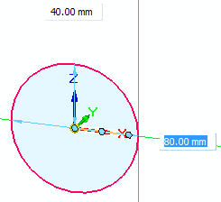
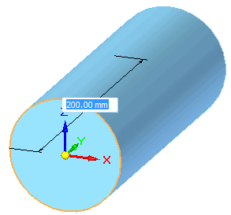
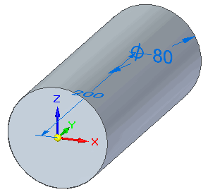

Construct a cylinder feature
-
Choose Home tab→Solids group→Box list→Cylinder .
-
Press F3 to lock to a plane, or to use automatic sketch plane locking, click to define the center point of the cylinder.
For more information, see the Sketch Plane Locking help topic.

-
To specify the diameter, drag until the circle is the approximate size and click, or type a value in the edit box and press Enter.

-
To specify the depth of the cylinder, drag+click, or type and enter a value.

The completed Cylinder feature is shown in PathFinder.
